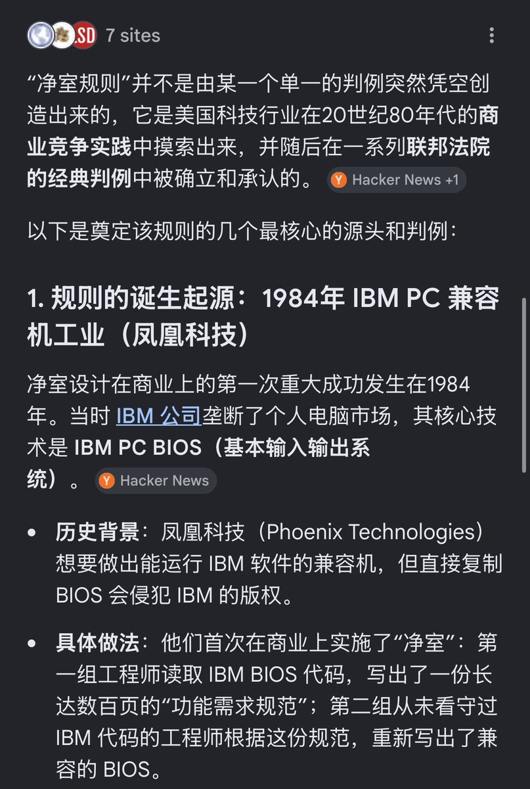

@is_llll 建议是让 @Weixin_WeChat 找 @TencentGlobal 处理这件事，先把懒猫微服的侵权一事判了再说，后面开源的该dmca该干啥就是腾讯的事了


一个商业公司做了闭源的微信多开被个人开源复刻出来于是状告个人侵犯版权😅…
1. 除非申请专利，法律默认不保护idea，这是故意的
2. 申请专利必须公开而且必须让gov觉得这个专利合理
3. 微信多开绝对不可能申请专利
4. 在真实的商业场景，Andy应该因非法侵入计算机信息系统罪被腾讯请进去踩缝纫机 https://t.co/a2E8dTj9sK https://t.co/25eD8fgy8h
1. 除非申请专利，法律默认不保护idea，这是故意的
2. 申请专利必须公开而且必须让gov觉得这个专利合理
3. 微信多开绝对不可能申请专利
4. 在真实的商业场景，Andy应该因非法侵入计算机信息系统罪被腾讯请进去踩缝纫机 https://t.co/a2E8dTj9sK https://t.co/25eD8fgy8h